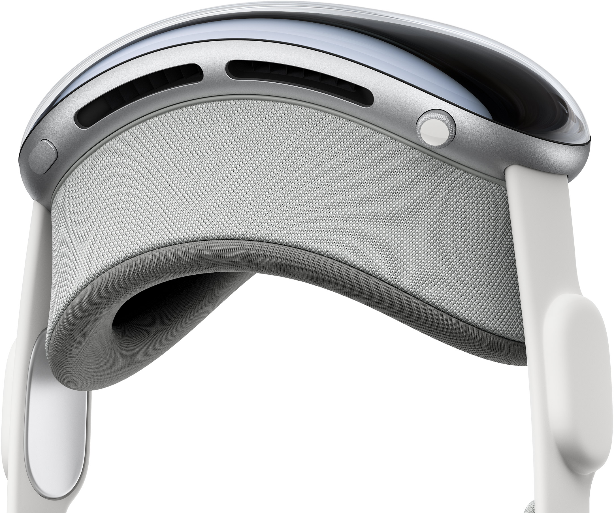
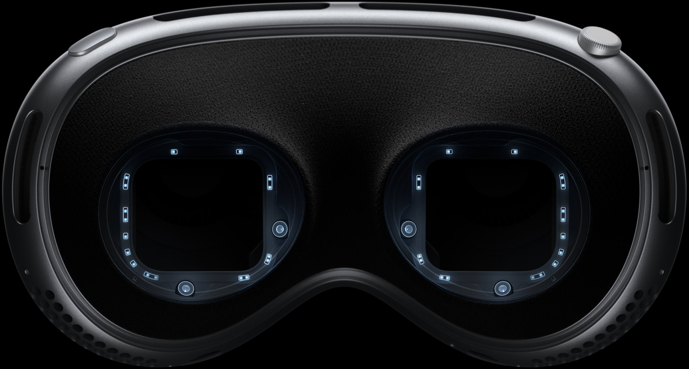

With Apple Vision Pro, you have an infinite canvas that transforms how you use the apps you love. Arrange apps anywhere and scale them to the perfect size, making the workspace of your dreams a reality — all while staying present in the world around you. Browse the web in Safari, create a to-do list in Notes, chat in Messages, and seamlessly move between them with a glance.
Design
Designed by Apple.
Apple Vision Pro is the result of decades of experience designing high‑performance, mobile, and wearable devices — culminating in the most ambitious product Apple has ever created. Apple Vision Pro integrates incredibly advanced technology into an elegant, compact form, resulting in an amazing experience every time you put it on.
Front. A singular piece of three-dimensionally formed laminated glass flows into an aluminum alloy frame that curves to wrap around your face.
Light Seal. The Light Seal gently flexes to conform to your face, delivering a precise fit while blocking out stray light.
Head bands. The Solo Knit Band provides cushioning, breathability, and stretch, and a Fit Dial lets you adjust Apple Vision Pro precisely to your head. The Dual Loop Band offers an additional option for a personalized fit.
Power. The external battery supports up to 2 hours of general use and up to 2.5 hours of video playback.1
Sound. Speakers positioned close to your ears deliver rich Spatial Audio while keeping you aware of your surroundings.
EyeSight. An outward display reveals your eyes while wearing Apple Vision Pro, letting others know when you are using apps or fully immersed.
A singular piece of three-dimensionally formed laminated glass acts as an optical surface for the cameras and sensors that view the world. It flows seamlessly into a custom aluminum alloy frame that gently curves to wrap around your face while serving as an attachment point for the Light Seal.

Responsive, precision eye tracking.
A high‑performance eye‑tracking system of LEDs and infrared cameras projects invisible light patterns onto each eye. This advanced system provides ultraprecise input without your needing to hold any controllers, so you can accurately select elements just by looking at them.

Our most advanced Spatial Audio system ever.
Dual-driver audio pods positioned next to each ear deliver personalized sound while letting you hear what’s around you. Spatial Audio makes sounds feel like they’re coming from your surroundings. Audio ray tracing analyzes your room’s acoustic properties to adapt and match sound to your space. And if you want to use headphones with Apple Vision Pro, AirPods Pro (2nd generation) with USB‑C offer the perfect experience, featuring Lossless Audio with ultra-low latency enabled by the H2 chip in both devices.